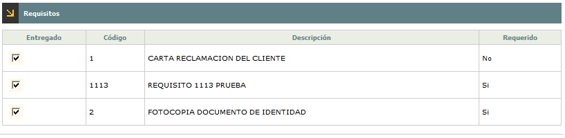

Reclamos |
Mediante esta función se habilita el mantenimiento de la tabla en la cual se crean, actualizan y consultan los reclamos generados para los clientes, así como la asignación manual o automática de éstos al gestor correspondiente.
El formulario contiene las opciones Actualizar, Eliminar, Adicionar y Detalle. Adicionalmente, cuenta con un filtro de búsqueda y la opción Asignar reclamos.

Filtro: Se pueden realizar consultas a través de las siguientes opciones:
Código reclamo |
Campo numérico de 4 dígitos que contiene el código del reclamo que se desea buscar. |
| Tipo de identificación | En este campo tipo combo, el usuario puede seleccionar el tipo de documento asociado al cliente al cual corresponde el reclamo que se desea consultar en la base de datos. |
| Número de identificación | Campo numérico de 16 posiciones, en el que se ingresa el número de identificación del cliente asociado con el reclamo que se quiere consultar |
Adicionar: Si el usuario invoca la opción Adicionar se despliega un wizard de dos pasos.
El primer paso del wizard se llama Reclamos y despliega el siguiente formulario:
Tipo reclamo |
En este campo obligatorio, se selecciona de la lista de valores adjunta, el tipo de reclamo que se desea crear. |
Tipo de identificación |
En este campo campo tipo combo obligatorio, el usuario puede seleccionar el tipo de documento del cliente al cual se le va a radicar el reclamo. |
| Número de identificación | Campo numérico de 16 dígitos obligatorio, en el que se ingresa el número de identificación del cliente al cual se le radicará el reclamo. |
| Número tarjeta | Campo que contiene lista de valores con las tarjetas o créditos que posea el cliente seleccionado por el usuario y en el cual se registra el número de tarjeta sobre la cual se está efectuando el reclamo. Se vuelve obligatorio únicamente cuando el reclamo seleccionado es de tipo Transacción, de lo contrario puede quedar nulo. |
| Fecha registro | Campo que se diligencia automáticamente por el sistema con la fecha sysdate y no permite ser actualizado por el usuario. |
| Medio de recepción | En este campo tipo combo obligatorio, el usuario puede seleccionar entre Carta, Internet, Correo electrónico, Plataforma, Teléfono u Otros; según el medio utilizado por el cliente para radicar el correspondiente reclamo. |
| Información de contacto | Campo alfanumérico de 60 posiciones, obligatorio, en el cual se registra la información del cliente o de la persona a través de la cual se dará solución al reclamo radicado. |
| Descripción del reclamo | Campo alfanumérico de 60 posiciones, obligatorio, en el cual se registra una breve descripción del reclamo a radicar. |
| Texto reclamo | Campo alfanumérico de 2000 posiciones, en el cual se registra de forma detallada el reclamo radicado por el cliente. |
El segundo paso del wizard se llama Requisitos y contiene información cuando se han parametrizado requisitos para el reclamo seleccionado, de lo contrario, despliega el formulario en blanco:
Entregado |
En este campo, el usuario puede seleccionar si el requisito fue entregado o no, en el momento de la radicación del reclamo. Si es requerido, el sistema validará que haya sido entregado para permitir solucionar dicho reclamo, de lo contrario puede quedar como no entregado. |
Código |
En este campo de salida se despliega el código de cada uno de los requisitos parametrizados para el reclamo seleccionado. |
| Descripción | En este campo de salida se despliega la descripción de cada uno de los requisitos parametrizados para el reclamo seleccionado. |
| Requerido | Este campo de salida informa si el requisito está parametrizado como requerido o no para el reclamo seleccionado. |
Actualizar: Si el usuario invoca la opción Actualizar se despliega un wizard de dos pasos.
El primer paso del wizard se llama Reclamos, en el cual los únicos campos modificables son: Número de tarjeta, Medio de recepción, Información de contacto, Descripción reclamo y Texto reclamo.
El segundo paso del wizard se llama Requisitos y el único campo modificable es el que permite seleccionar si el requisito fue entregado o no.

Detalle: Si el usuario invoca la opción Detalle se despliega el siguiente formulario:
Asignación automática de reclamos
| Mediante este botón, el sistema asigna automáticamente un gestor a cada una de las actividades parametrizadas para el reclamo seleccionado. Una vez se utilice dicho botón, los reclamos existentes en el formulario desaparecen y se verán reflejados en la opción Atención de reclamos y Maestro de reclamos, según el usuario con el cual se esté ingresando. |